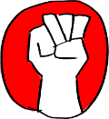

Ombud
Ombud es un sistema que actúa como Ombudsman entre tú y los entes estatales encargados de cuidar tu ciudad. Te ayuda a informarlos de problemas como calles en mal estado, basura, alumbrado público dañado o situaciones peligrosas en tu barrio.
La idea es catalogar la información y hacer llegar los reportes de incidentes a las entidades o personas que puedan darle una solución. Los datos generados son abiertos y usamos la tecnología de datos abiertos de OpenStreetMap para proveer geolocalización a la información.